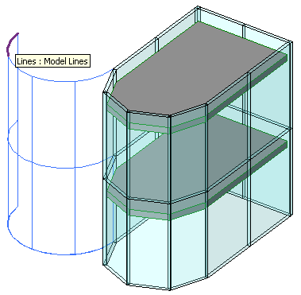

Model Curve Creator
I showed a screen snapshot in the discussion of the curtain wall geometry that I generated by querying the curtain wall for its non-visible curves and generating model curves from those to visualise them, offset from the curtain wall itself by the curtain wall length to make them easier to distinguish.
I would now like to discuss the code and some new methods that I added to The Building Coder model curve Creator class in order to achieve that.
I started off by implementing a new Building Coder sample command CmdCurtainWallGeom to perform the following steps:
- Select the curtain wall.
- Extract its location line.
- Determine the wall length vector v for offsetting the model line visualisation results.
- Query the wall for its non-visible geometry.
- For each curve returned, generate a model line offset by the vector v.
The offset curves are easy to generate at a high level by creating a translation Transform instance and using the Curve method get_Transformed.
In previous uses of the Creator class to display slab side faces, wall compound layers and the wall elevation profile, we expended much more effort to much less effect by breaking down the curves into individual points, translating each point individually, and creating model lines between the points, i.e. losing support for all other non-linear curve types.
Noticing this inefficiency and information loss, I re-implemented the model curve creation to handle all curve types, not just straight lines. The implementation was simultaneously enhanced, shortened and simplified.
One important new component for this is the GetCurveNormal method which I recently presented in the discussion the detail curve plane. It determines a normal vector to use to create a sketch plane for an arbitrary given curve. If the curve is a straight line, the resulting plane can be any of many planes containing the curve. If not, we use the curve tessellation points to determine a plane containing the curve, assuming it is planar.
With that method in place, it is extremely simple to create a sketch plane containing any given planar curve:
SketchPlane NewSketchPlaneContainCurve( Curve curve ) { XYZ p = curve.get_EndPoint( 0 ); XYZ normal = GetCurveNormal( curve ); Plane plane = _app.NewPlane( normal, p ); return _doc.NewSketchPlane( plane ); }
With that method in place, it is simpler still, in fact completely trivial, to create a model curve from a given geometrical curve:
public void CreateModelCurve( Curve curve ) { _doc.NewModelCurve( curve, NewSketchPlaneContainCurve( curve ) ); }
With these two new methods on the Creator class in place, the code to implement the steps described above becomes quite short and sweet:
[Transaction( TransactionMode.Automatic )] [Regeneration( RegenerationOption.Manual )] class CmdCurtainWallGeom : IExternalCommand { public Result Execute( ExternalCommandData commandData, ref string message, ElementSet elements ) { UIApplication uiapp = commandData.Application; UIDocument uidoc = uiapp.ActiveUIDocument; Application app = uiapp.Application; Document doc = uidoc.Document; Wall wall = Util.SelectSingleElementOfType( uidoc, typeof( Wall ), "a curtain wall" ) as Wall; if( null == wall ) { message = "Please select a single " + "curtain wall element."; } else { LocationCurve locationcurve = wall.Location as LocationCurve; Curve curve = locationcurve.Curve; // move whole geometry over by length of wall: XYZ p = curve.get_EndPoint( 0 ); XYZ q = curve.get_EndPoint( 1 ); XYZ v = q - p; Transform tv = Transform.get_Translation( v ); curve = curve.get_Transformed( tv ); Creator creator = new Creator( doc ); creator.CreateModelCurve( curve ); Options opt = app.Create.NewGeometryOptions(); opt.IncludeNonVisibleObjects = true; GeometryElement e = wall.get_Geometry( opt ); foreach( GeometryObject obj in e.Objects ) { curve = obj as Curve; if( null != curve ) { curve = curve.get_Transformed( tv ); creator.CreateModelCurve( curve ); } } } return Result.Succeeded; } }
I already showed the result of running this command and picking a curved curtain wall:

Here is version 2011.0.69.0 of The Building Coder sample source code and Visual Studio solution including the new command.